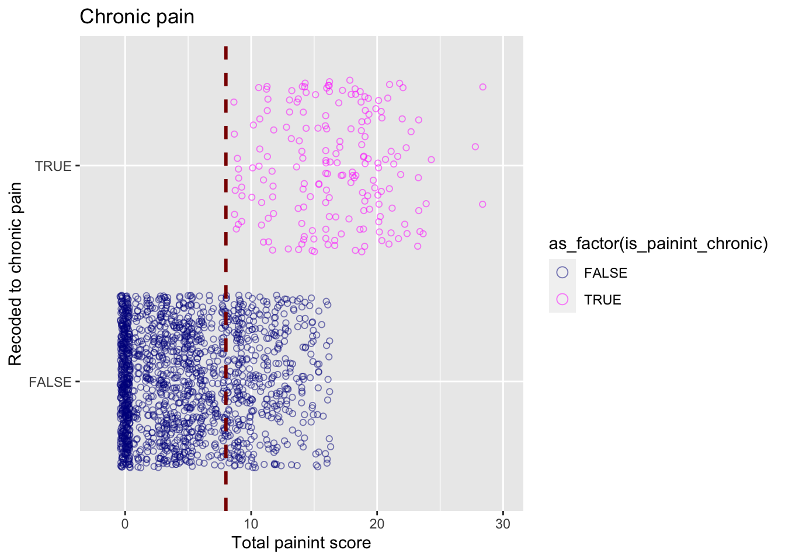
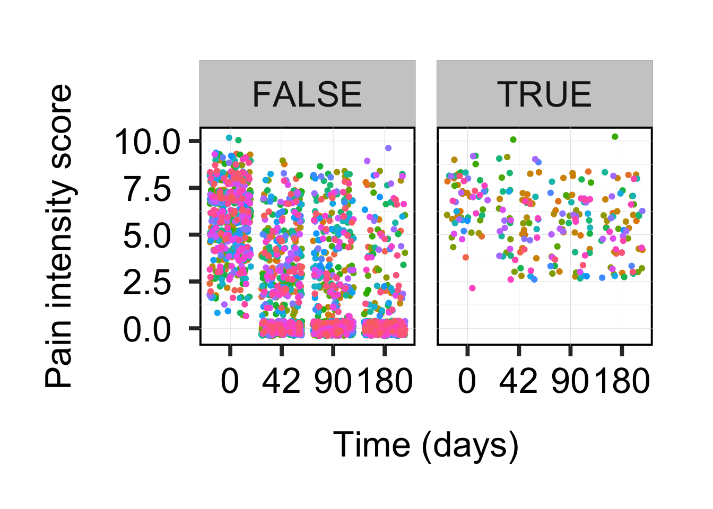
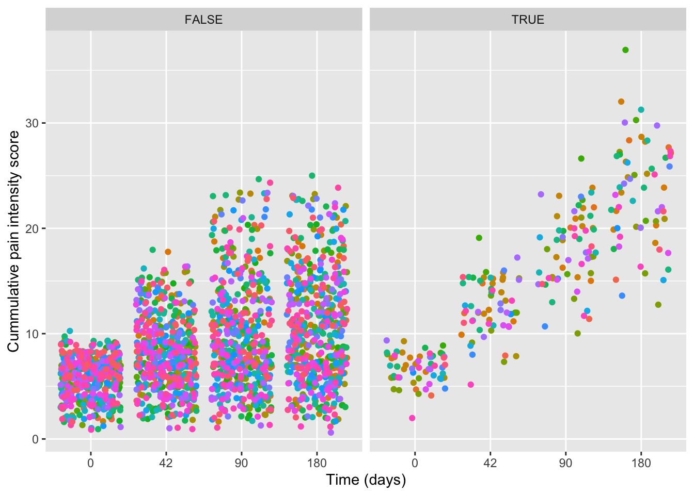
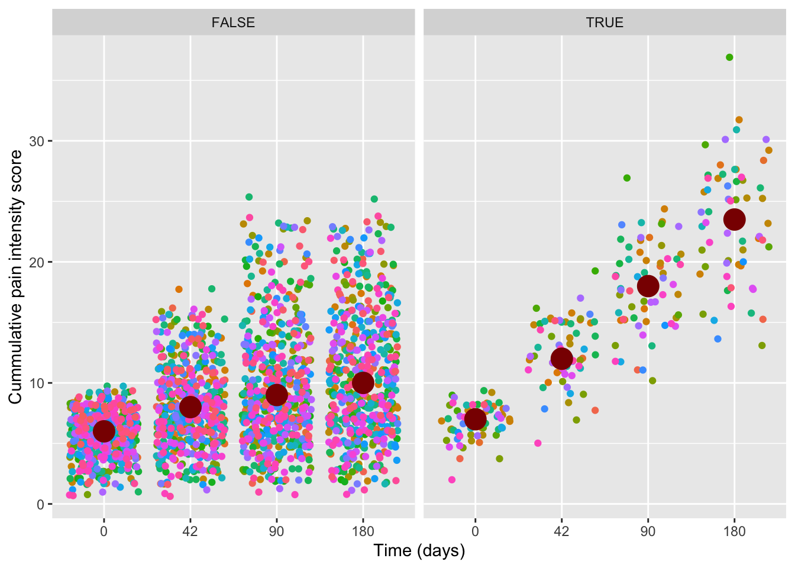
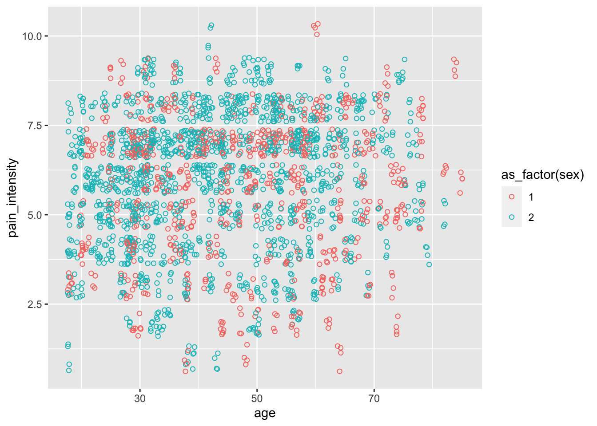

Part 3 Statistical exploration
3.2 Data
## non-imputed
df_imp <- read_rds(here::here("data", "df_imputed.rds"))
data_list <- read_rds(here::here("data", "data-list.rds"))
df_non_imp <- data_list$data_preprocessed
## add patient code
df_non_imp$patient_code <- data_list$data_subset$patient_code
df_imp$patient_code <- data_list$data_subset$patient_code3.4 Statistical analysis methods and missing data
3.4.1 Distribution data and Table 1
- For table 1 and the following analysis we have to create a new
variable based on the variables:
painint_6weeks,painint_3monthsandpainint_6months. The new variable name:is_painint_chronic, with
- the outcome no = FALSE and
- yes = TRUE. (FALSE no chronic pain, TRUE chronic pain).
- TRUE = chronic pain = if the variables
painint_6weeks,painint_3monthsandpainint_6monthsare each 3 or higher
#df_imp <- data
## new variable `chronic_pain` & recode to dichotomous
df_imp <- df_imp |>
dplyr::mutate(
painint_6weeks_high = ifelse(painint_6weeks >= cutoff_painint_high, TRUE, FALSE),
painint_3months_high = ifelse(painint_3months >= cutoff_painint_high, TRUE, FALSE),
painint_6months_high = ifelse(painint_6months >= cutoff_painint_high, TRUE, FALSE)
)
df_imp <- df_imp |>
rowwise() |>
mutate(
painint_high =
sum(painint_6weeks_high, painint_3months_high, painint_6months_high)
)
df_imp <- df_imp |>
rowwise() |>
mutate(
painint_total_score =
sum(painint_6weeks, painint_3months, painint_6months)
)
df_imp <- df_imp |>
mutate(
is_painint_chronic = ifelse(
painint_high >= 3, TRUE, FALSE
)
)3.7 Recode time
## recode to days
df_imp_long <- df_imp_long |>
mutate(
time_days = recode_factor(
time,
`6weeks` = 42,
`3months` = 90,
`6months` = 180))
## write to disk
write_rds(df_imp, file = here::here("data", "imputed_with_attitude_and_chronic.rds"))## add var to trace missingness
df_imp_long <- df_imp_long |>
mutate(is_chronic_missing = is.na(painint_total_score))
## check with visual
df_imp_long |>
ggplot(aes(
x = painint_total_score,
y = as_factor(is_painint_chronic)
)) +
geom_point(aes(colour = as_factor(is_painint_chronic)),
position = "jitter", shape = 1, alpha = 0.5) +
scale_color_manual(values = c("darkblue", "magenta")) +
geom_vline(
xintercept = cutoff_chronic-1,
linetype = "dashed",
colour = "darkred",
linewidth = 1
) +
guides(color = guide_legend(override.aes = list(size = 3, shape = 1))) +
xlab("Total painint score") +
ylab("Recoded to chronic pain") +
ggtitle("Chronic pain") +
xlim(c(-2, 30)) -> plot_chronic
plot_chronic
3.8 Adding baseline as time=0
df_imp_long |>
group_by(patient_code) |>
reframe(painint_score = unique(pain_intensity)) |>
mutate(time_days = 0,
time_days = as_factor(time_days)) -> df_baseline
## join with original
#df_imp_long_subset <- df_imp_long |>
# dplyr::select(patient_code, painint_score, time_days, is_painint_chronic)
df_baseline## # A tibble: 603 × 3
## patient_code painint_score time_days
## <dbl> <dbl> <fct>
## 1 100 8 0
## 2 101 6 0
## 3 102 7 0
## 4 103 7 0
## 5 104 5 0
## 6 106 2 0
## 7 107 7 0
## 8 108 3 0
## 9 109 2 0
## 10 110 6 0
## # ℹ 593 more rows3.9 Carry forward
Due to the join we have missing values. We can use a crry forward for the last set of observations and fill in the NA for that value. We group by patient code.
df_imp_long |>
arrange(patient_code) |>
tidyr::fill(is_chronic_missing:is_painint_chronic) -> df_imp_long
## add 'baseling' level to 'time'
df_imp_long <- df_imp_long |>
mutate(time = as.character(time)) |>
mutate(time = ifelse(is.na(time), "baseline", time))## get patient ids
p_ids <- df_imp_long$patient_code |> unique()
## time has wrong level order
df_imp_long$time_days |>
levels()## [1] "42" "90" "180" "0"## reoder levels
df_imp_long <- df_imp_long |>
mutate(
time_days_relevel = fct_relevel(
time_days, "0", "42", "90", "180"
))
## pain over time
df_imp_long |>
ggplot(
aes(x = time_days_relevel,
y = painint_score)) +
geom_point(aes(
colour = as_factor(patient_code)),
show.legend = FALSE,
position = "jitter") +
xlab("Time (days)") +
ylab("Pain intensity score") +
facet_wrap(~is_painint_chronic) -> pain_over_time_chronic
pain_over_time_chronic + citrulliner::theme_individual()
ggsave(here::here("img", "pain_over_time.png"),
height = 20, width = 30, units = "cm", dpi = 300)
## calculate average trend
df_imp_long_summary <- df_imp_long |>
group_by(time_days_relevel, is_painint_chronic) |>
summarise(median_painint_score = median(painint_score))
df_imp_long_summary## # A tibble: 8 × 3
## # Groups: time_days_relevel [4]
## time_days_relevel is_painint_chronic median_painint_score
## <fct> <lgl> <dbl>
## 1 0 FALSE 6
## 2 0 TRUE 7
## 3 42 FALSE 2
## 4 42 TRUE 6
## 5 90 FALSE 0
## 6 90 TRUE 6
## 7 180 FALSE 0
## 8 180 TRUE 5df_imp_long |>
ggplot(
aes(x = time_days_relevel,
y = painint_score)) +
geom_point(aes(
colour = as_factor(patient_code)),
show.legend = FALSE,
position = "jitter") +
xlab("Time (days)") +
ylab("Pain intensity score") +
geom_line(
data = df_imp_long_summary,
aes(x = time_days_relevel,
y = median_painint_score,
group = is_painint_chronic),
linewidth = 2) +
facet_wrap(~is_painint_chronic) -> painint_over_time_with_trend
ggsave(plot = painint_over_time_with_trend + citrulliner::theme_individual(),
here::here("img", "pain_over_time_trend.png"),
height = 20, width = 20, units = "cm", dpi = 300) 3.10 Rework the graph above to get cummulative pain intensity scores
df_imp_pain_cumsum <- df_imp_long |>
group_by(patient_code) %>%
arrange(time_days_relevel) |>
nest()
df <- df_imp_pain_cumsum$data[[1]]
df## # A tibble: 4 × 43
## is_chronic_missing sex age education education_level pain_intensity
## <lgl> <fct> <dbl> <fct> <fct> <dbl>
## 1 FALSE 1 32 6 0 8
## 2 FALSE 1 32 6 0 8
## 3 FALSE 1 32 6 0 8
## 4 FALSE 1 32 6 0 8
## # ℹ 37 more variables: duration <dbl>, recurrence <fct>,
## # wide_spread_pain <fct>, headache <fct>, disability <dbl>, work <fct>,
## # work_happiness <fct>, work_satisfaction <fct>, posture_work <fct>,
## # physical_activity <fct>, smoking <fct>, alcohol <fct>, bmi <dbl>,
## # sleep_quality <fct>, catastrophizing <dbl>, duration_beliefs <dbl>,
## # concerns <dbl>, treatment_beliefs <dbl>, depression <dbl>,
## # kinesiophobia <dbl>, distress <dbl>, coping <fct>, …## get cumsum (into function)
get_pain_cumsum <- function(df){
df <- df |>
arrange(time_days_relevel) |>
mutate(pain_cumsum = cumsum(painint_score))
return(df)
}
## apply function
df_imp_pain_cumsum |>
mutate(
pain_cumsum = map(
.x = data,
.f = get_pain_cumsum)
) |>
unnest(pain_cumsum) -> df_cumsum_long
## plot
df_cumsum_long |>
ggplot(
aes(x = time_days_relevel,
y = pain_cumsum)) +
# geom_line(aes(group = patient_code, colour = as_factor(patient_code)), show.legend = FALSE) +
geom_point(aes(colour = as_factor(patient_code)), show.legend = FALSE, position = "jitter") +
xlab("Time (days)") +
ylab("Cummulative pain intensity score") +
facet_wrap(~is_painint_chronic) -> pain_over_time_chronic_cumsum
pain_over_time_chronic_cumsum
ggsave(plot = pain_over_time_chronic_cumsum, filename = here::here("img", "pain_over_time_cumsums.png"),
height = 50, width = 50, units = "cm", dpi = 300)
## calculate average trend
df_summary_cumsum <- df_cumsum_long |>
group_by(time_days_relevel, is_painint_chronic) |>
summarise(median_painint_score_cumsums = median(pain_cumsum))
pain_over_time_chronic_cumsum +
geom_point(
data = df_summary_cumsum,
aes(x = time_days_relevel, y = median_painint_score_cumsums),
colour = "darkred", size = 6) -> pain_cumsums_over_time
pain_cumsums_over_time
3.11 Get individual lines for each patient
## create two panels, one with chonic pain and one without.
df_imp_long |>
dplyr::filter(patient_code %in% c(101:201)) |>
ggplot(
aes(x = time_days_relevel,
y = painint_score)) +
geom_point(aes(colour = is_painint_chronic),
show.legend = TRUE,
size = 3) +
xlab("Time (days)") +
ylab("Pain intensity score") +
geom_line(
aes(x = time_days_relevel,
y = painint_score,
group = is_painint_chronic,
colour = is_painint_chronic),
linewidth = 2,
show.legend = TRUE) +
facet_wrap(~ patient_code) +
ylim(-1, 10) +
citrulliner::theme_individual() -> painint_over_time_with_trend_individual
painint_over_time_with_trend_individual
3.13 Distribution of the data
For all variables at baseline and the outcome variables ‘Painint_6weeks’, ‘Painint_3months’ and ‘Painint_6months’ and ‘chronic_pain’. For the outcome variable chronic_pain the distribution difference between Man/Female, Pain_intensity (baseline) and Age.
## variable distributions
df_complete <- map_df(
.x = df_imp_long,
.f = as.numeric
)
distros <- map2(
.x = df_complete,
.y = names(df_complete),
.f = plot_distro
)
cowplot::plot_grid(plotlist = distros)
## chronic pain over sex
df_complete |>
group_by(sex, is_painint_chronic) |>
tally() |>
ggplot(aes(
x = as_factor(sex),
y = n
)) +
geom_col(aes(fill = as_factor(sex)), position = "dodge", show.legend = FALSE) +
facet_wrap(~as_factor(is_painint_chronic)) +
xlab("Gender") +
ylab("Count") +
ggtitle("Distrubution of gender over people\nwith and without chronic pain")
## pain intensity over age
df_imp_long |>
ggplot(aes(
x = age,
y = pain_intensity
)) + geom_point(aes(colour = as_factor(sex)), position = "jitter", shape = 1) #+
3.14 Table: baseline characteristics of the included patients
The candidate prognostic factors and the outcome variable chronic pain of patients with acute- or subacute nonspecific idiopathic, non-traumatic neck pain.
## function to calculate percentage missing of vector x
missingness_perc <- function(x){
missingness_sum <- sum(is.na(x))
length_x <- length(x)
perc <- (missingness_sum/length_x)*100
return(perc)
}
df_non_imp |>
sjlabelled::remove_all_labels() |>
group_by(
sex
) |>
summarise(
mean_age = mean(age, na.rm = TRUE),
median_age = median(age, na.rm = TRUE),
mean_bmi = mean(bmi, na.rm = TRUE),
median_pain_6_weeks = median(painint_6weeks, na.rm = TRUE),
missingness_6_weeks = missingness_perc(painint_6weeks),
median_pain_3_months = median(painint_3months, na.rm = TRUE),
missingness_3_months = missingness_perc(painint_3months),
median_pain_6_months = median(painint_6months, na.rm = TRUE),
missingness_6_months = missingness_perc(painint_6months)
) -> df_table_1
df_table_1## # A tibble: 2 × 10
## sex mean_age median_age mean_bmi median_pain_6_weeks missingness_6_weeks
## <fct> <dbl> <dbl> <dbl> <dbl> <dbl>
## 1 1 47.3 47 25.7 2 26.7
## 2 2 43.1 42 25.1 2 24.9
## # ℹ 4 more variables: median_pain_3_months <dbl>, missingness_3_months <dbl>,
## # median_pain_6_months <dbl>, missingness_6_months <dbl>## # A tibble: 11 × 4
## # Groups: sex, smoking [6]
## sex smoking alcohol n
## <fct> <fct> <fct> <int>
## 1 1 1 1 22
## 2 1 1 2 162
## 3 1 2 1 2
## 4 1 2 2 19
## 5 1 <NA> <NA> 1
## 6 2 1 1 90
## 7 2 1 2 252
## 8 2 1 <NA> 2
## 9 2 2 1 15
## 10 2 2 2 36
## 11 2 <NA> <NA> 2This table includes also the variable pain intensity at 6 weeks, 3 months and 6 months. The outcome variable chronic pain is based on these three factors. Including the percentage (%) of the missing values. For the continuous variables a mean (SD) and median. For the continue variables I want to add an explanatory note with the scale and the abbreviations in the table. Is this possible to do this directly in R?
To generate tables directly from R, see: https://gt.rstudio.com/
# pak::pkg_install("gt")
# pak::pkg_install("webshot2")
library(gt)
library(webshot2)
df_table_1 |>
gt() |>
tab_header(
title = "Study subjects information",
subtitle = "Patient details summary") -> table_1_markup
gtsave(table_1_markup, filename = here::here("data", "table1.html"))
gtsave(table_1_markup, filename = here::here("data", "table1.docx"))
df_table_2 |>
gt() |>
tab_header(
title = "Smoking and alcohol use",
subtitle = "Patient details summary") -> table_2_markup
gtsave(table_2_markup, filename = here::here("data", "table2.html"))
gtsave(table_2_markup, filename = here::here("data", "table2.docx"))3.15 Testing assumptions before backward analysis
- For the development of a prediction model and internal validation (and testing for assumptions). You need the following packages:
- We have to test the assumption for applying a backward analysis.
- Linearity, check whether the relationships between the predictor variables and the outcome variable are linear. (assessed through techniques like scatter plots, partial regression plots, or residual plots).